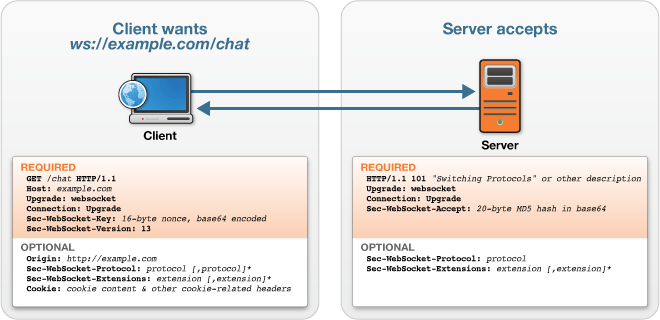
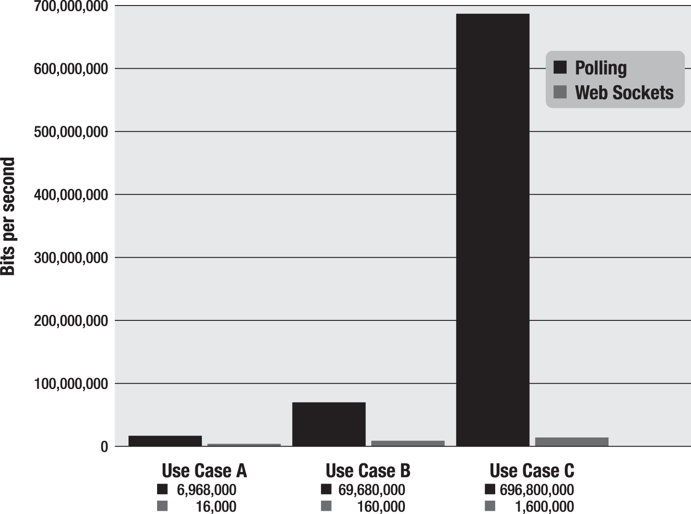
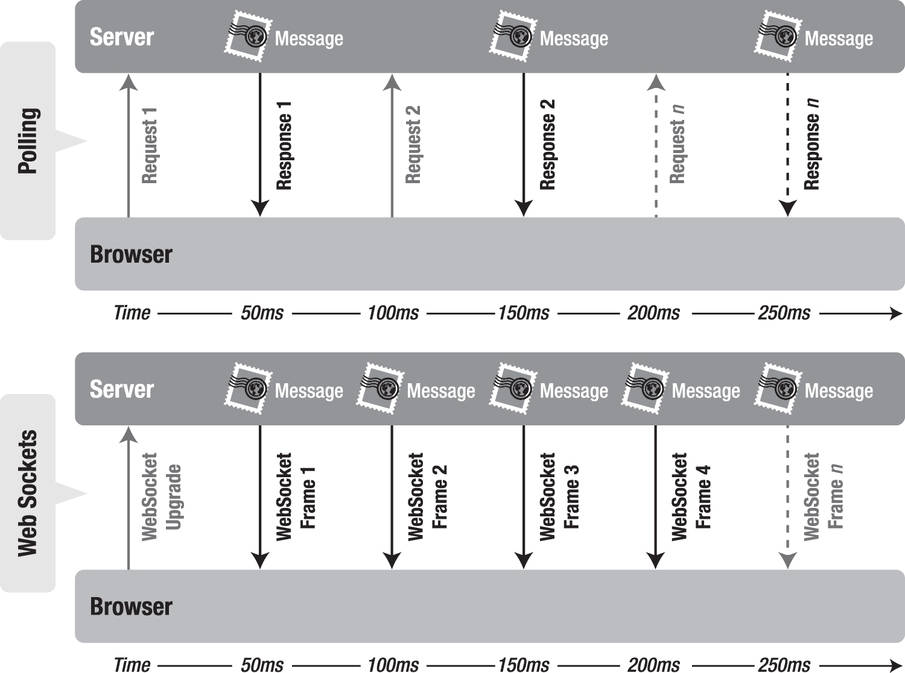
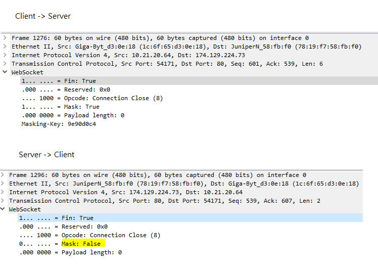

2017/01/12 - WebSocket¶
Understanding WebSocket [1]¶
WebSocket was first defined as “TCPConnection” in the Communications section of the HTML5 specification by Ian Hickson (lead writer of the HTML5 specification).
Both TCPConnection and WebSocket are names that refer to lower-level networking interfaces. TCP is a fundamental transport protocol for the Internet. WebSocket is a transport protocol for web applications. It provides a bidirectional stream of data that arrives in order, much like TCP. As with TCP, higher-level protocols can run over WebSocket. To be part of the Web, rather than connecting to an Internet host and port, WebSocket connects to URLs.
The WebSocket Handshake¶
To establish a WebSocket connection, the client and server upgrade from the HTTP protocol to the WebSocket protocol during their initial handshake.
From client to server
GET /chat HTTP/1.1
Host: example.com
Connection: Upgrade
Sec-WebSocket-Protocol: sample
Upgrade: websocket
Sec-WebSocket-Key: 7cxQRnWs91xJW9T0QLSuVQ==
Origin: http://example.com
[8-byte security key]
From server to client
HTTP/1.1 101 WebSocket Protocol Handshake
Upgrade: websocket
Connection: Upgrade
Sec-WebSocket-Accept: 7cxQRnWs91xJW9T0QLSuVQ==
WebSocket-Protocol: sample
Once established, WebSocket messages can be sent back and forth between the client and the server in full-duplex mode. This means that text-based messages can be sent full-duplex, in either direction at the same time. On the network each message starts with a 0x00 byte, ends with a 0xFF byte, and contains UTF-8 data in between.
A Dramatic Reduction in Unnecessary Network Traffic and Latency¶
If we use polling… HTTP request header
GET /PollingStock//PollingStock HTTP/1.1
Host: localhost:8080
User-Agent: Mozilla/5.0 (Windows; U; Windows NT 5.1; en-US; rv:1.9.1.5) Gecko/20091102
Firefox/3.5.5
Accept: text/html,application/xhtml+xml,application/xml;q=0.9,*/*;q=0.8
Accept-Language: en-us
Accept-Encoding: gzip,deflate
Accept-Charset: ISO-8859-1,utf-8;q=0.7,*;q=0.7
Keep-Alive: 300
Connection: keep-alive
Referer: http://www.example.com/PollingStock/
Cookie: showInheritedConstant=false; showInheritedProtectedConstant=false;
showInheritedProperty=false; showInheritedProtectedProperty=false;
showInheritedMethod=false; showInheritedProtectedMethod=false;
showInheritedEvent=false; showInheritedStyle=false; showInheritedEffect=false
HTTP Response Header
HTTP/1.x 200 OK
X-Powered-By: Servlet/2.5
Server: Sun Java System Application Server 9.1_02
Content-Type: text/html;charset=UTF-8
Content-Length: 21
Date: Sat, 07 Nov 2009 00:32:46 GMT
The total HTTP request and response header information overhead contains 871 bytes and that does not even include any data. Of course, this is just an example and you can have less than 871 bytes of header data, but there are also common cases where the header data exceeded 2,000 bytes. In this example application, the data for a typical stock topic message is only about 20 characters long. As you can see, it is effectively drowned out by the excessive header information, which was not even required in the first place.
So, what happens when you deploy this application to a large number of users? Let’s take a look at the network overhead for just the HTTP request and response header data associated with this polling application in three different use cases.
- Use case A: 1,000 clients polling every second : Network traffic is (871 × 1,000) = 871,000 bytes = 6,968,000 bits per second (6.6 Mbps)
- Use case B: 10,000 clients polling every second: Network traffic is (871 × 10,000) = 8,710,000 bytes = 69,680,000 bits per second (66 Mbps)
- Use case C: 100,000 clients polling every 1 second: Network traffic is (871 × 100,000) = 87,100,000 bytes = 696,800,000 bits per second (665 Mbps)
That’s an enormous amount of unnecessary network overhead. Consider if we rebuilt the application to use WebSocket, adding an event handler to the web page to asynchronously listen for stock update messages from the message broker (more on that in just a little bit). Each of these messages is a WebSocket frame that has as little as two bytes of overhead (instead of 871). Take a look at how that affects the network overhead in our three use cases.
- Use case A: 1,000 clients receive 1 message per second: Network traffic is (2 × 1,000) 2,000 bytes = 16,000 bits per second (0.015 Mbps)
- Use case B: 10,000 clients receive 1 message per second: Network traffic is (2 × 10,000) = 20,000 bytes = 160,000 bits per second (0.153 Mbps)
- Use case C: 100,000 clients receive 1 message per second: Network traffic is (2 × 100,000) = 200,000 bytes = 1,600,000 bits per second (1.526 Mbps)
As you can see in this Figure, WebSocket provides a dramatic reduction of unnecessary network traffic compared to the polling solution.
{kind=link}
When it comes to latency , for this example, that it takes 50 milliseconds for a message to travel from the server to the browser, then the polling application introduces a lot of extra latency, because a new request has to be sent to the server when the response is complete. This new request takes another 50 ms and during this time the server cannot send any messages to the browser, resulting in additional server memory consumption.
{kind=link}
In the bottom half of the figure, you see the reduction in latency provided by the WebSocket solution. Once the connection is upgraded to WebSocket, messages can flow from the server to the browser the moment they arrive. It still takes 50 ms for messages to travel from the server to the browser, but the WebSocket connection remains open so there is no need to send another request to the server.
WebSocket Masking [2]¶
The reason for the masking is to make WebSocket traffic look unlike normal HTTP traffic and become completely unpredictable. Otherwise any network infrastructure equipment which is not yet upgraded to understand the WebSocket protocol can mistake it for normal http traffic causing various problems.
This is especially a problem for caching proxy servers and leads to possible attack scenarios. Specifically crafted WebSocket traffic can cause cache poisoning by tricking the proxy servers into mistaking a part of a WebSocket communication for a request and response for an unrelated URL, cache it like a legitimate response and send it to other users which request that URL.
{kind=link}
Control Frame [3]¶
- Close
The application MUST NOT send any more data frames after sending a Close frame.
If an endpoint receives a Close frame and did not previously send a Close frame, the endpoint MUST send a Close frame in response. (When sending a Close frame in response, the endpoint typically echos the status code it received.) It SHOULD do so as soon as practical. An endpoint MAY delay sending a Close frame until its current message is sent (for instance, if the majority of a fragmented message is already sent, an endpoint MAY send the remaining fragments before sending a Close frame).
- Ping
Upon receipt of a Ping frame, an endpoint MUST send a Pong frame in response, unless it already received a Close frame. It SHOULD respond with Pong frame as soon as is practical.
An endpoint MAY send a Ping frame any time after the connection is established and before the connection is closed.
NOTE: A Ping frame may serve either as a keepalive or as a means to verify that the remote endpoint is still responsive.
- Pong
A Pong frame sent in response to a Ping frame must have identical “Application data” as found in the message body of the Ping frame being replied to.
If an endpoint receives a Ping frame and has not yet sent Pong frame(s) in response to previous Ping frame(s), the endpoint MAY elect to send a Pong frame for only the most recently processed Ping frame.
A Pong frame MAY be sent unsolicited. This serves as a unidirectional heartbeat. A response to an unsolicited Pong frame is not expected.
Reference¶
| [1] | : http://apress.jensimmons.com/v5/pro-html5-programming/ch7.html |
| [2] | : RFC6455 https://tools.ietf.org/html/rfc6455#section-10 |
| [3] | : Why need masking http://security.stackexchange.com/questions/113297/whats-the-purpose-of-the-mask-in-a-websocket |
| [4] | : RFC 6455 section-5.5 https://tools.ietf.org/html/rfc6455#section-5.5.2 |
| [5] | : http://websocket.org/echo.html |